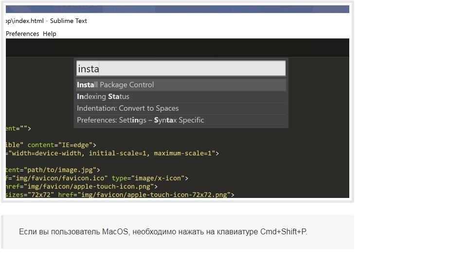
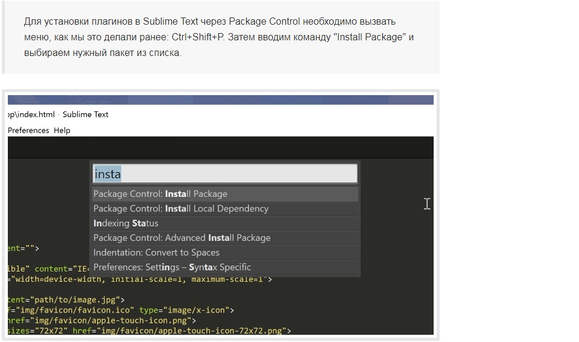

Установка плагинов
Плагин что это?
Плагин — независимо компилируемый программный модуль, динамически подключаемый к основной программе и предназначенный для расширения и/или использования её возможностей. Плагины обычно выполняются в виде библиотек общего пользования.
Для возможности подключения плагинов разработчик основного приложения должен предусмотреть в нем некоторый программный интерфейс, а также хотя бы минимальные возможности по управлению набором плагинов. В этом случае возможности программы могут быть расширены сторонними разработчиками. В некоторых приложениях плагины могут настраиваться пользователем дополнительно.
Установка Package Control в Sublime Text
Для начала необходимо настроить Package Control. Для этого нажимаем хоткей Ctrl+Shift+P. Во всплывающем окне набираем Install Package Control и выбираем соответствующий пункт. Через несколько секунд Package Control будет установлен, о чём вы получите соответствующее уведомление.

Package Control необходим для того, чтобы вы могли устанавливать дополнения и плагины в Sublime Text 3 из репозитория пакетов.
Установка плагинов в Sublime Text
Далее необходимо установить нужные для работы плагины. Мы рассмотрим установку самых популярных среди верстальщиков плагины, которые значительно упрощают разработку. Вы также можете поэкспериментировать с другими плагинами в Package Control, может быть вам понравятся и другие из огромного количества доступных пакетов.

Самые популярные плагины для Sublime Text:
- Emmet - ускоряет написание HTML и CSS кода до скорости света. Урок по Emmet;
- AutoFileName - дополняет код при написании путей до файлов в вёрстке;
- Gist - подключает в Sublime Text возможность использовать сервис сниппетов кода GitHub Gist. Урок по Gist;
- Sass - плагин для подсветки Sass синтаксиса в Sass и Scss файлах. Раскрывает Emmet в Sass файлах.
- terminus - плагин встроенного терминала Sublime Text.
- W3CValidators - мощный набор валидаторов для HTML разметки, CSS, SVG и т.д.